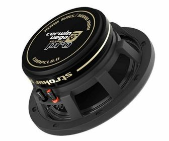
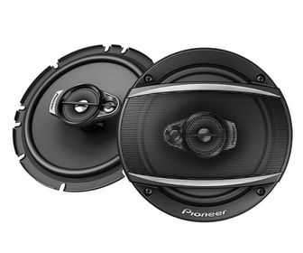
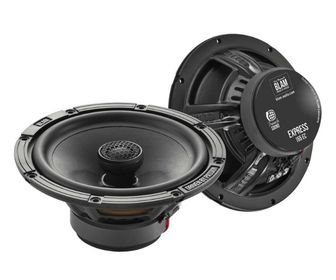
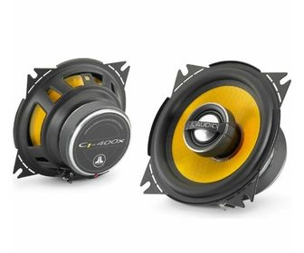
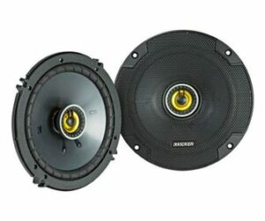

😎 marcas reconosidas de bocinas para tu atomobil 😎
✅Cerwin Vega
es una empresa americana que durante más de 50 años se ha caracterizado por producir un sonido profesional. Por eso, las bocinas Cerwin Vega es una de las marcas más respetadas.

✅ Pioneer
Pioneer es una de las empresas pioneras, a nivel internacional, en producción de equipos de sonido, con un amplio catálogo de productos.

✅ Blam
Blam es una marca de origen francés, con cerca de 30 años de experiencia. El ensamblado de sus productos es a mano, garantizando una gran calidad en cada pieza.

✅ JL Audio
La calidad en sus materiales y productos ubica a esta marca como Premium. Tiene más de 40 años en la industria de audio car con un gran prestigio.

✅ Kicker
Esta marca nació en 1973 en la ciudad de Oklahoma y diseñó la primera caja de altavoces de rango de frecuencia completa para automotores. Desde entonces Kicker ha buscado la innovación en cada uno de los modelos de sus bocinas.
